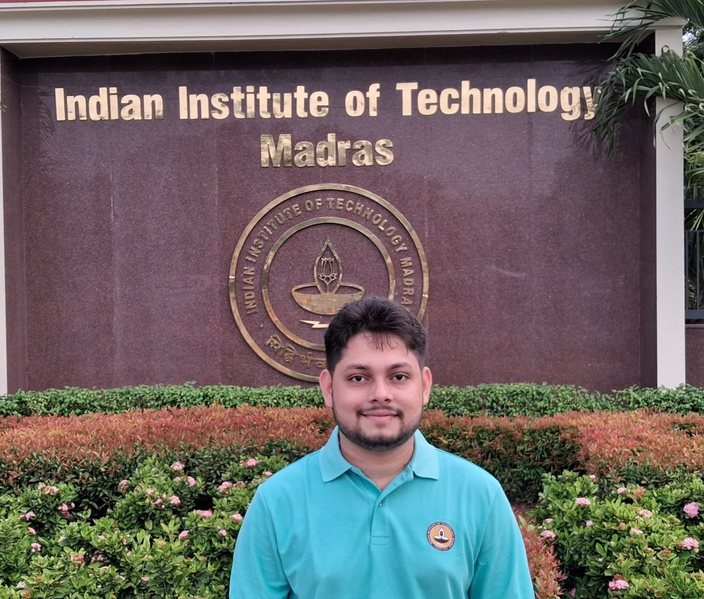

Portfolio · Vol. 01
Research Assistant, IIT Madras — under Prof. Arun Rajkumar
Md. Aminul Islam Rony
M.Tech in Data Science, IIT Madras
I work on machine learning, rank aggregation, and statistical learning — building systems that turn noisy, real-world data into reliable decisions, and shipping them with proper MLOps discipline end to end.

2nd year M.Tech, Data Science — IIT Madras (Jul 2025–present)
Machine Learning · Rank Aggregation · Statistical Learning
M.Tech CSE, IIT (ISM) Dhanbad — Aug 2024–May 2025
Featured Work
A glimpse at recent projects
End-to-end machine learning systems and full-stack applications, from data pipeline to deployment.
FinPredict — Intelligent Loan Approval System
XGBoost · FastAPI · React · MLflow · Airflow · DVC · Docker · Prometheus / GrafanaAn AI-powered loan approval prediction system trained on 52,000 records, built with a full MLOps pipeline — versioned data, tracked experiments, orchestrated retraining, and live monitoring.
KIIT International Student Portal
React.js · Node.js · Express.js · MongoDB · Firebase Auth · JWTA platform streamlining visa renewal for international students at KIIT University — secure document exchange between students and the International Relations Office.